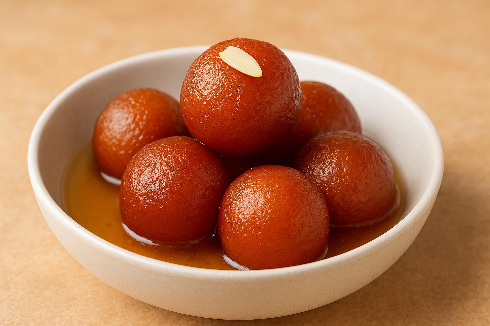
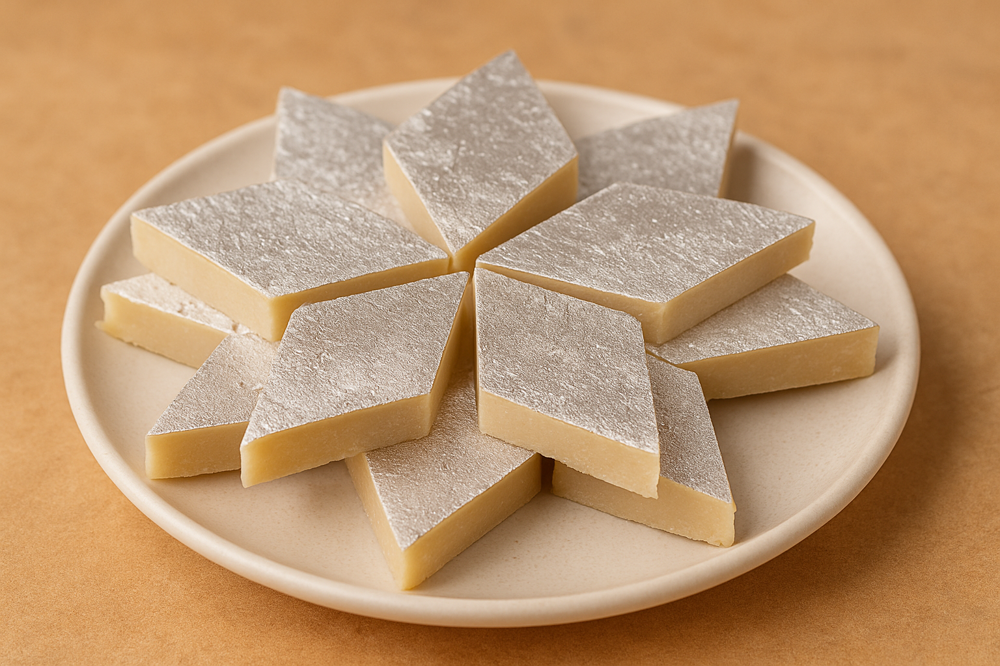
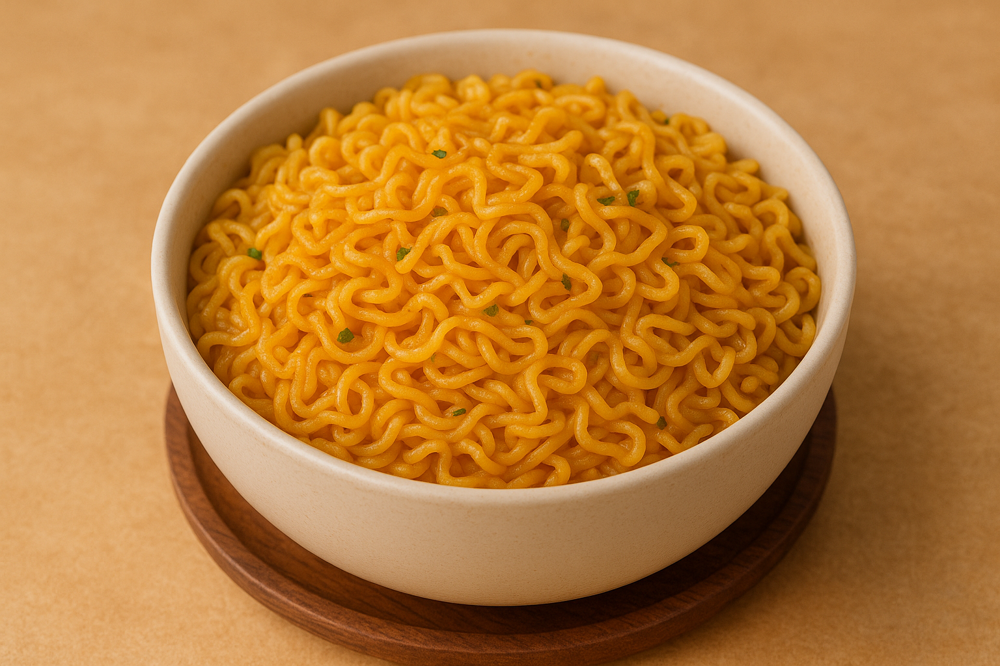
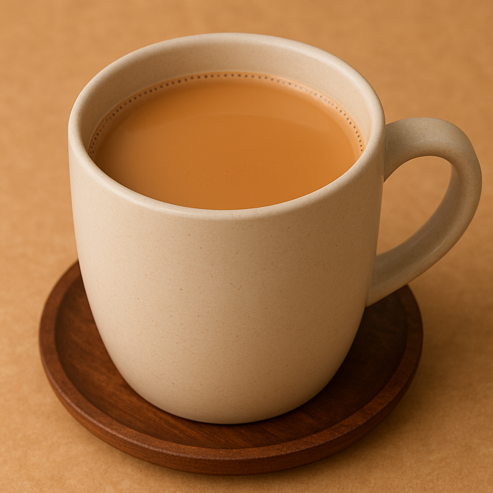

Gulab Jamun
Ingredients
- Suger
- Maida
- Oil
- Milk
Recipe
- Roll the dough, cool it slightly, then cut into diamond shapes.
- Shape into smooth balls without cracks.
- Deep fry onlow flame until golden brwon.
- Soak in warm sugar syrup flavored with cardamom.

Kaju Barfi
Ingredients
- Cashew nuts
- Sugar
- Cardamom powder
Recipe
- Grind cashews into a fine powder.
- Boil sugar with water to make 1-string syrup.
- Add cashew powder and cook until a soft dough forms.
- Roll the dough, cool it slightly, then cut into diamond shapes

Maggi
Ingredients
- Maggi noddles
- Masala
- Butter
- Veggies
Recipe
- Boil 1/2 half cup of water.
- Add Noodles and masla.
- Cook 2-3 min, stirring until water is obsorbed
- Add Veggies while stirring and butter at the end.

Chai
Ingredients
- Milk
- Chai patti
- Sugar
- Ginger
Recipe
- Boil 1/2 half cup of water.
- Add Milk chai patti and sugar.
- Crash the ginger and addup
- Cook 8-10 min, until Color is redish Brown
